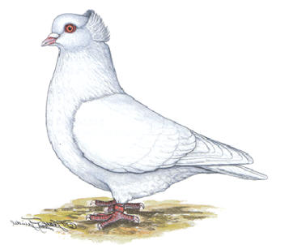

Die Sottobanca-Taube

Herkunft: Italien (Lombardei). Hier zunächst als Nutztaube gezüchtet. Anfang des 20. Jahrhunderts nach Frankreich eingeführt, dort und später auch in Italien zu einer Rasse geformt.
Gesamteindruck
Große, kräftige, nicht zu lange Taube mit leicht aufgerichteter Haltung. Sie ist lebhaft, jedoch zutraulich.
Rassemerkmale
- Kopf: Groß, gut gerundet, mit gut gewölbter und sehr breiter Stirn, Haube schaufelartig, breit, fest, federreich und ohne seitliche Wirbel.
- Augen: Orangerot; Augenrand schmal, rötlich.
- Schnabel: Mittellang, kräftig, fleischfarbig; bei Schwarzen und Blauen ist ein Stipp gestattet.
- Hals: Ziemlich dick, harmonisch in die Brust übergehend.
- Brust: Breit, gut gerundet, hervortretend.
- Rücken: Breit, leicht hohl.
- Flügel: Mittellang, breit, fest am Körper anliegend, den Rücken möglichst gut deckend.
- Schwanz: Ziemlich kurz, geschlossen, breitfedrig, in Verlängerung des Rückens getragen.
- Beine: Kurz, unbefiedert, Krallenfarbe der Schnabelfarbe entsprechend.
- Gefieder: Breit, glatt anliegend, nicht zu locker.
Farben und Zeichnung
Die häufigsten Farbenschläge sind Weiß, Schwarz, Blau mit schwarzen Binden, Rot und Gelb. Die Farben sind satt und rein. Die Blauen Tauben haben einen Stahlblau-Ton mit durchgehenden und getrennt verlaufenden Binden.
Grobe Fehler
- Kleiner, langer oder schmaler Körper
- Flache und schmale Brust
- Zu flache oder aufrechte Haltung
- Flache oder schmale Stirn
- Muschelhaube mit seitlichen Wirbeln
- Mangelhafte Rückendeckung
- Grober Augenrand
- Mangelhafte Farbe
Bewertung
Die Bewertung erfolgt nach folgenden Kriterien:
- Gesamteindruck
- Körperform und Haltung
- Kopf
- Haube
- Auge
- Farbe
- Schnabelfarbe